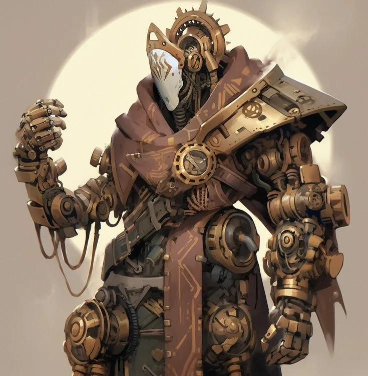
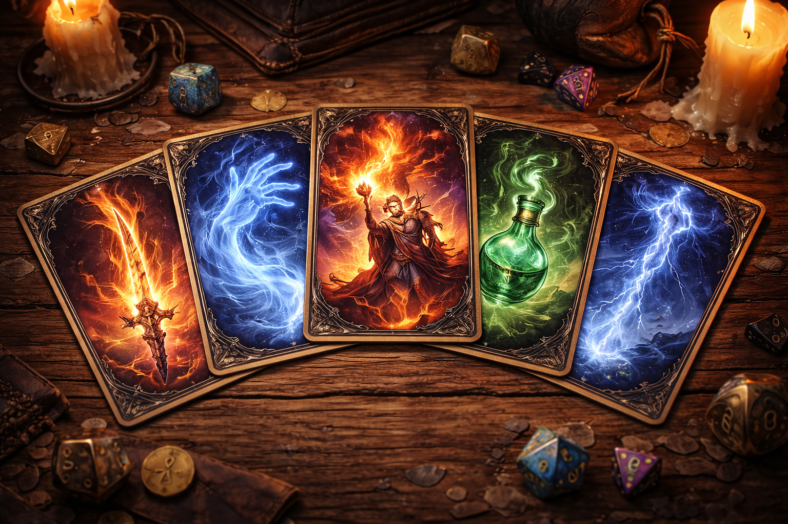
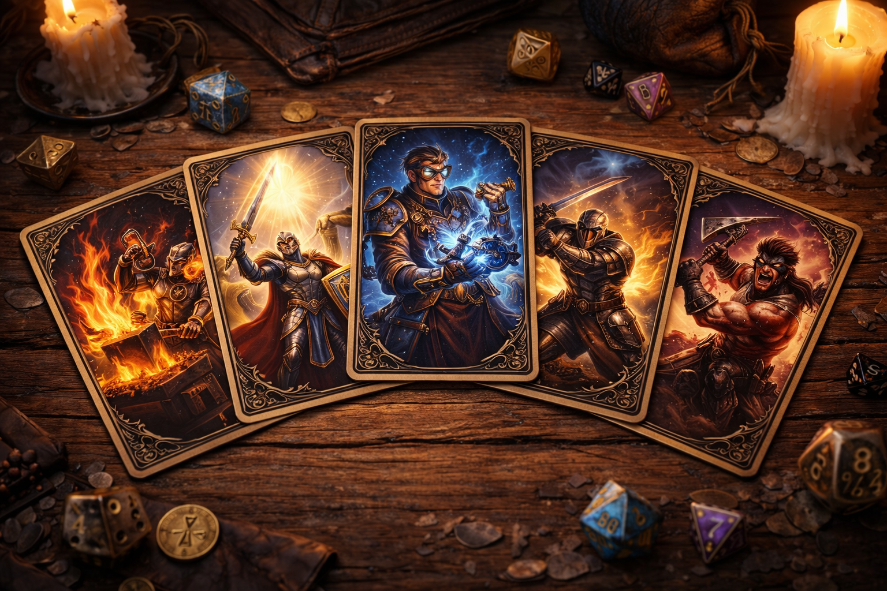
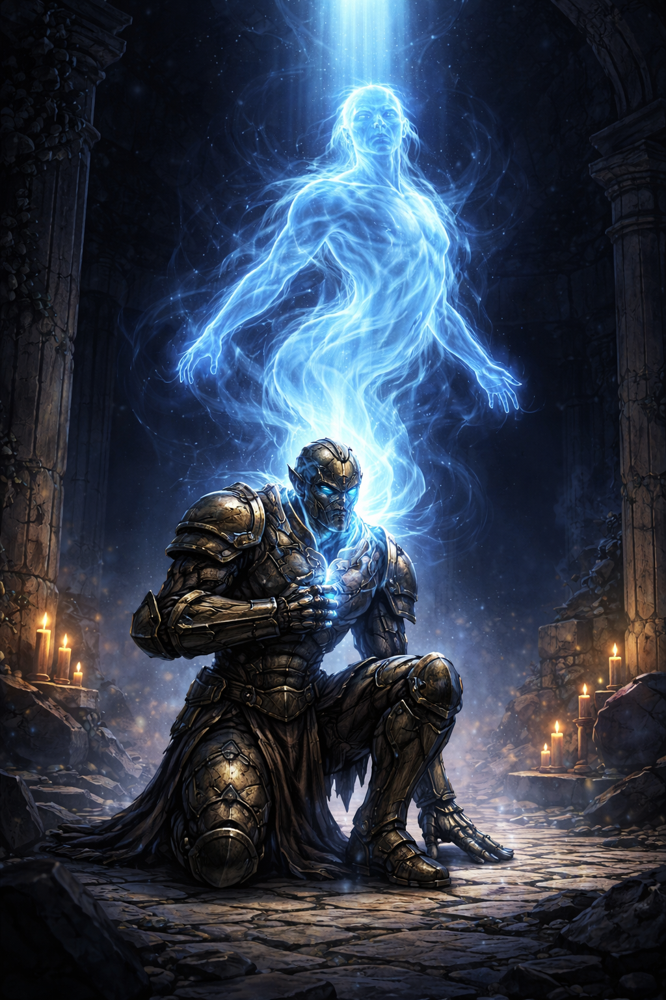

Кованые были созданы во время Последней войны в Эберроне домами Каннит и Тарклейв как живые конструкты — идеальные солдаты. Они не спят, не едят, не чувствуют боли. После окончания войны Трактат Тронхолда даровал им свободу, и теперь тысячи кованых странствуют по миру в поисках своего места. Их тела состоят из дерева, металла и магических волокон, а сознание хранится в «сердце-камне».

+2 Телосложение, +1 к любой характеристике. Тип: конструкт. Иммунитет к болезням, ядам, магическому сну. Не нуждаются в еде, питье и воздухе. Встроенная защита: базовый КД 13 + Ловкость. Вместо сна — 6 часов неактивности, но сохраняют сознание. Владение одним инструментом или навыком на выбор. Могут быть исцелены магией как гуманоиды.

Жрец Кузницы: идеальная синергия с расой, баффы и кованые доспехи.
Паладин: высокое Телосложение даёт много хитов, иммунитет к ядам и болезням.
Изобретатель: может модифицировать своё тело, улучшая броню и оружие.
Воин: дополнительные атаки, выживаемость, подходит для любого билда.
Варвар: ярость + встроенная броня = отличный танк.

Главный вопрос — есть ли у кованых душа? Большинство из них верят, что есть, и их эмоции, мечты и страхи подтверждают это. Кованые испытывают любовь, гнев, печаль, но иначе, чем органические существа. Мировоззрение варьируется от законопослушных воинов, ищущих новый кодекс, до хаотичных исследователей свободы. Известны случаи, когда кованые становились жрецами, поэтами и дипломатами.